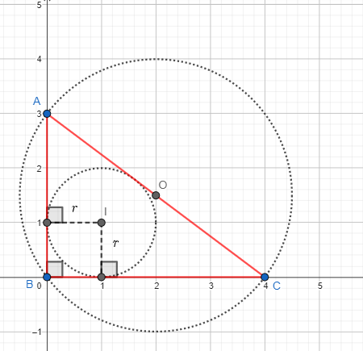
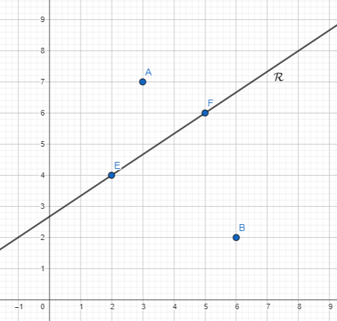
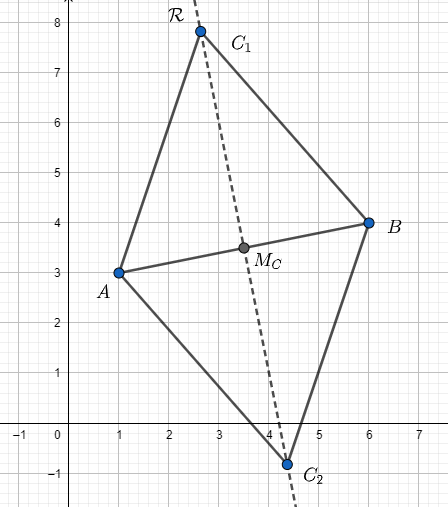
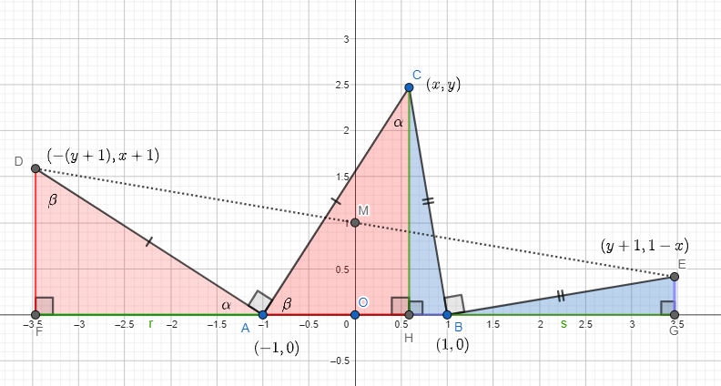
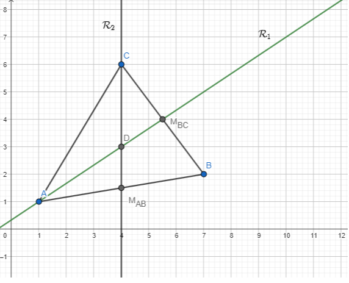
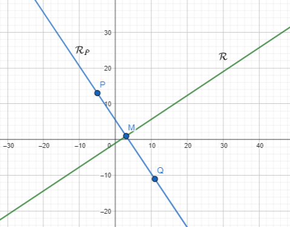
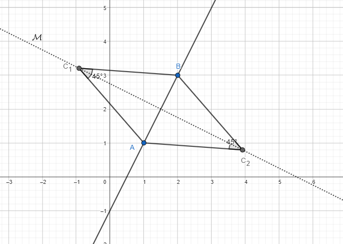
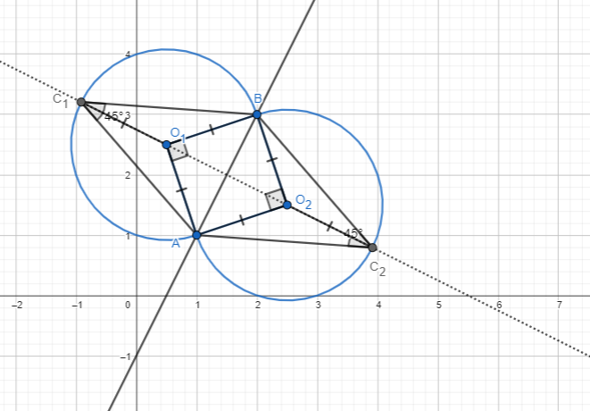
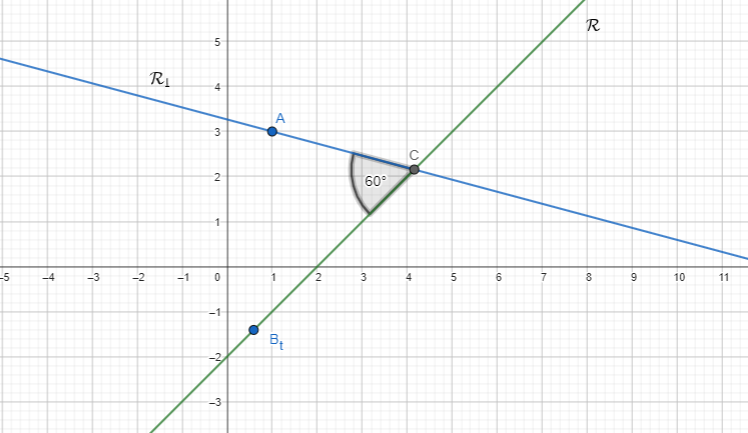
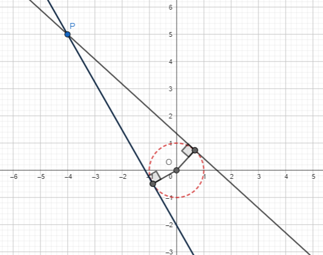

Cositas importantes:
- Si tenemos una recta en forma implícita \(ax + by + c = 0\) entonces en forma paramétrica es \( \mathcal{R}: [(b,-a)] + (1,-c) \)
- Si tenemos una recta en forma paramétrica \([(a,b)] + (c,d)\) entonces en forma implícita es \(bx - ay - (b,-a)\cdot(c,d) = 0\)
- (Una reformulación de lo anterior) Si tenemos una recta en forma paramétrica \([(a,b)] + (c,d)\) entonces en forma implícita es \(a(y - d) - b(x - c) = 0\)
Ejercicio
¿Existe un \(k \in \mathbb{R}\) tal que \(k(2,1) + (3,2) = (4,2)\)? ¿Se le ocurre una justificación geométrica?
Sean \(A = (k,2)\) y \(B = (2,k+1)\) con \( k \in \mathbb{R}\) a determinar. Hallar todos los \(k\) de manera tal que la distancia entre \(A\) y \(B\) es 1. Graficar los \(A\) y \(B\) hallados.
Esconder/mostrar solución
La distancia entre dos vectores \(A\) y \(B\) es \(\| A - B \| = \|(k-2, -k+1)\| = \sqrt{(k - 2)^2 + (-k + 1)^2 } = \sqrt{2k^2 - 6k + 5} = 1 \).
De esta manera buscamos los \(k \in \mathbb{R}\) tales que \(\sqrt{2k^2 - 6k + 5} = 1 \iff 2k^2 - 6k + 4 = 0 \iff (k-1)(k-2) = 0 \)
Luego hay dos posibilidades, a saber \(A_1 = (1,2)\) y \(B_1 = (2,2)\), y por otro lado \(A_2 = (2,2)\) y \(B_2 = (2,3)\)
Ejercicio
Consideremos los puntos \(A = (2,1)\), \(B = (0,3)\), \(C = (4,4)\), \(D = (6,2) \)
Demostrar que \(ABCD\) se trata de un paralelogramo viendo que sus lados opuestos son de igual medida.
Sean los vectores \(v = (3,1)\) y \(w = (4,3)\). Si \(v\) es un lado de un paralelogramo y \(w\) es una diagonal, encontrar un \(u\) de forma tal que \(u\) sea otro lado del paralelogramo.
¿Cuánto mide la otra diagonal de este paralelogramo?
¿Como calcularía el área? (por ahora...)
Esconder/mostrar solución
Verifiquemos que \(AB = CD\) y que \(BC = AD \).
En efecto \(\|A-B\| = \|(2,-2)\| = \|C-D\| = \| (2,-2)\| = \sqrt{8}\).
y por otro lado \( \|B-C\| = (-4,-1) = \|A-D\| = (-4,-1) \| = \sqrt{17} \).
De esta manera verificamos que los lados opuestos son de igual longitud y por lo tanto es un paralelogramo.
-
Buscamos \(u\) tal que \(u + v = w\). Es decir, \(u = w - v = (1,2)\).
Ahora que sabemos los dos lados, la otra diagonal mide \( \| u-v \| = \|(-2,1)\| = \sqrt{5} \)
Para calcular el área podemos pensar en que el paralelogramo está dividido en \(2\) triángulos congruentes de lados que miden \(\|u\|\), \(\|v\|\) y \(\|u+v\|\) y aplicar Herón.
Ejercicio
Consideremos un triangulo rectángulo de lados \(3\), \(4\) y \(5\). Encontrar la distancia del circuncentro al incentro.

Esconder/mostrar solución
Recordemos que en un triángulo, para encontrar el ortocentro debemos trazar la mediatriz de dos lados. En este caso podemos trazar la mediatriz de los dos catetos, esto nos dice que la coordenada \(x\) es \(4/2 = 2\) y la coordenada \(y\) es \(3/2\).
Es decir, el ortocentro se encuentra en el punto \(\left(2,\frac{3}{2} \right)\).
De hecho, para cualquier triángulo rectángulo el ortocentro se encuentra en el punto medio de su hipotenusa! (¿por qué?).
Por otro lado, recordemos que si trazamos perpendiculares a los lados que pasan por el incentro, estas tienen todas la misma medida (el inradio \(r\)). De esta manera, mirando las dos perpendiculares a los catetos vemos que el incentro se encuentra en el punto \((r,r)\) donde \(r\) es el inradio
Podemos calcular el inradio como \(r = \text{Área}/s = 6/6 = 1\), o sea que el incentro se encuentra en \((1,1)\)
Por lo tanto la distancia entre el ortocentro y el incentro es \( \| \left(2,\frac{3}{2} \right) - (1,1) \| = \| \left(1,\frac{1}{2} \right) \| = \sqrt{5}/2 \)
Ejercicio
Consideremos la recta \(\mathcal{R}\) definida por los puntos \(E = (2,4)\) y \( F = (5,6) \).
Sean los puntos \(A = (3,7)\) y \(B = (6,2)\). Hallar todos los puntos \(C \in \mathcal{R}\) tales que \(\angle ACB = 90^\circ\)

Esconder/mostrar solución
Solución:
La recta generada por \(E\) y \(F\) es \(\mathcal{R}: [F-E] + E \) o lo que es lo mismo \(\mathcal{R}: [(3,2)] + (2,4) \).
Es decir, lo puntos de la recta son de la forma \(R(t) = (3t +2, 2t + 4)\) para cualquier \(t \in \mathbb{R}\).
Como \(C\) pertenece a la recta \(\mathcal{R}\), \(C\) debe ser de la pinta \(C = (3t + 2, 2t + 4) \).
Ahora bien, buscamos que \(\angle ACB = 90^\circ\) con lo cual buscamos que \(A' = A-C = (-3t +1, -2t+3) \) y \(B' = B-C = (-3t+4,-2t-2)\) sean perpendiculares.
Es decir, \(A' \cdot B' = 0\) o lo que es lo mismo \((-3t +1, -2t+3) \cdot (-3t+4,-2t-2) = 0 \iff (-3t +1)(-3t+4) + (-2t+3)(-2t-2) = 0 \iff 13t^2 - 17t - 2 = 0 \).
De aquí haciendo la resolvente sacamos \(t_1 = \frac{17 + \sqrt{393}}{26} \) y \(t_2 = \frac{17 - \sqrt{393}}{26}\). Con lo cual hay dos \(C\), a saber \(C_1 = (3t_1 + 2, 2t_1 + 4) = (3\frac{17 + \sqrt{393}}{26} + 2, 2\frac{17 + \sqrt{393}}{26} + 4\) y \(C_2 = (3\frac{17 - \sqrt{393}}{26} + 2, 2\frac{17 - \sqrt{393}}{26} + 4)\).
Ejercicio
Sea \(A = (1,3)\) y \(B = (6,4)\) puntos en el plano. Encuentre todos los \(C\) tales que \(\triangle ABC\) es un triángulo equilatero.

Esconder/mostrar solución
Solución: Notemos que \(C\) es un punto tal que \(\overline{AC} = \overline{BC} \)
Por lo tanto, \(C\) está sobre la mediatriz de \(\overline{AB}\).
La mediatriz es la recta que pasa por el punto medio de \(\overline{AB}\) y es perpendicular a este segmento. El punto medio lo calculamos como:
\(M_C = \frac{ A + B }{2} = \left( \frac{1+6}{2}, \frac{3+4}{2} \right) = \left( \frac{7}{2}, \frac{7}{2} \right) \)
Y el vector director de la recta debe ser perpendicular a \(\vec{BA}\), es decir perpendicular a \(B-A = (6,4)-(1,3) = (5,1) \).
Luego la recta donde se encuentra \(C\) es:
\(\mathcal{R}: [(-1,5)] + \left( \frac{7}{2}, \frac{7}{2} \right) = \left(-t + \frac{7}{2}, 5t + \frac{7}{2} \right) \)
Por lo tanto \(C\) tendra la forma \(C = \left(-t + \frac{7}{2}, 5t + \frac{7}{2} \right) \) para algún \(t \in \mathbb{R}\)
Para averiguar \(t\), usamos el hecho de que \(\overline{BA} = \overline{CA}\) es decir:
\( \sqrt{26} = \sqrt{\left(-t + \frac{5}{2} \right)^2 + \left( 5t + \frac{1}{2} \right)^2} \)
Si expandimos todo queda \( t^2 = \frac{3}{4}\), luego tenemos dos soluciones \(t_1 = \frac{\sqrt{3}}{2}\) y \(t_2 = -\frac{\sqrt{3}}{2}\).
Por lo tanto hay dos puntos posibles:
\(C_1 = \left(-\frac{\sqrt{3}}{2} + \frac{7}{2}, 5\frac{\sqrt{3}}{2} + \frac{7}{2} \right) = \textcolor{red}{\left(\frac{-\sqrt{3} + 7}{2}, \frac{5\sqrt{3} + 7}{2} \right)} \)
\( C_2 = \left(\frac{\sqrt{3}}{2} + \frac{7}{2}, -5\frac{\sqrt{3}}{2} + \frac{7}{2} \right) = \textcolor{red}{\left(\frac{\sqrt{3} + 7}{2}, \frac{-5\sqrt{3} + 7}{2} \right)} \)
Ejercicio
Sean \(A = (1,1)\) y \(B = (4,4)\) encontrar \(C\) tal que \(\angle BAC = 30^\circ\).
Ejercicio (opcional)
Sea \(ABC\) un triangulo tal que \(\overline{AB} = 2\). Se considera el punto \(D\) tal que \(\angle CAD = 90^\circ\), \(DA = CA\) y \(\angle BAD = \angle CAB + 90^\circ\).
De manera semejante se considera el punto \(E\) tal que \(\angle CBE = 90^\circ\), \(EB = CB\) y \(\angle ABE = \angle CBA + 90^\circ \).
Mostrar que el punto medio de \(DE\) es indepediente de donde se ubica el punto \(C\) del triángulo.
Sugerencia: Se puede suponer sin problema que \(A = (-1,0)\), \(B = (0,1)\) y \(C = (x,y)\) con \(x\) e \(y\) números reales. Haga un dibujo y trate de averiguar las coordenadas de \(D\) y \(F\) .
Esconder/mostrar solución
Solución:

Como muestra la figura, ubicamos \(A = (-1,0)\) y \(B = (1,0)\), \(C = (x,y)\) un punto cualquiera y trazamos la perpendicular a \(AB\) por \(C\) (o sea la altura desde \(C\)) que corta a \(AB\) en \(H\).

Lo que podemos ver en la figura de arriba es que \(CHA\) es un triángulo congruente a \(DFA\) por ALA (notar que \(\overline{DA} = \overline{CA}\) por enunciado y es muy sencillo ver que \(\angle FAD = \angle HAC\) y por tanto todos los ángulos son iguales, queda como ejercicio sencillo de cazar ángulos).
De manera semejante podemos ver que \(CHB = BGE\).
Pero entonces mirando el dibujo, especificamente el triángulo \(ABC\) tenemos \(\|\overline{HB}\| = 1-x\), \(\|\overline{CH}\| = y\), \(\|\overline{AH}\| = 1+x\)
De esta manera, vemos que \(D = (-(y+1), x+1) \) y \( E = (y+1,1-x) \).
Entonces calculamos el punto medio, \(M = \frac{D+E}{2} = (0,1) \). Es decir el punto medio siempre se ubica en \((0,1)\) y no depende de \(C\).
Ejercicio
Sean \(A = (1,1) \), \(B = (7,2) \), \( C = (4,6) \). Hallar la recta que pasa por el punto medio de \(\overline{BC}\) y por \(C\) en paramétrica e implicita.
Hacer lo mismo para la recta que pasa por el punto medio de \(AB\) y \(C\). Chequear que el punto \(\frac{A+B+C}{3}\) se encuentra en ambas rectas (o sea la interesección). Este punto se llama el centroide de \(ABC\)
Esconder/mostrar solución
Solución:

El punto medio de \(\overline{BC}\) es \(M_{BC} = \frac{B+C}{2} = (\frac{11}{2},4)\).
Entonces la recta que pasa por \( M_{BC} \) y \(A\) es en forma parametrica \(\mathcal{R_1}:[(M_{BC}-A)] + A = [(\frac{9}{2},3)] + (1,1) \).
En forma implícita es \( \mathcal{R_1}: -3x + \frac{9}{2}y - (-3,\frac{9}{2})\cdot(1,1) = 0\). Es decir \( \mathcal{R_1}: -3x + \frac{9}{2}y -\frac{3}{2} = 0\)
De forma semejante el punto medio de \(\overline{AB}\) es \(M_{AB} = \frac{A+B}{2} = (4,\frac{3}{2})\).
Entonces la recta que pasa por \( M_{AB} \) y \(C\) es en forma parametrica \(\mathcal{R_2}:[(M_{AB}-C)] + C = [(0,-\frac{9}{2})] + (4,6) \).
En forma implícita es \( \mathcal{R_2}: \frac{9}{2}x - 0y - (\frac{9}{2},0)\cdot(4,6) = 0\). Es decir \( \mathcal{R_2}: \frac{9}{2}x - 18 = 0\)
Para chequear que \(\frac{A+B+C}{3} = (4,3)\) pertenece a ambas rectas podemos usar las implícitas y ver que el punto cumple con las ecuaciones.
En efecto, \(-3(4) + \frac{9}{2}(3) -\frac{3}{2} = 0 \) y \(\frac{9}{2}(4) - 18 = 0\).
Ejercicio
Dada una recta \(\mathcal{R}\) y un punto \(P\) que no está en \(\mathcal{R}\), definimos el punto \(Q\) como el simétrico de \(P\) respecto a \(\mathcal{R}\) si \(Q\) pertenece a la recta perpendicular a \(\mathcal{R}\) que pasa por \(P\), y además \(\frac{P+Q}{2} = M\) donde \(M\) es la intersección entre ambas rectas.
Ahora, dada la recta \(\mathcal{R}: 2x-3y-3=0 \) y el punto \(P = (-5,13) \), hallar el simétrico \(Q\).

Esconder/mostrar solución
Solución:
Primero buscamos la recta perpendicular a \(\mathcal{R}\) que pasa por \(P\). En primer lugar, un vector director de \( \mathcal{R} \) es \((3,2)\). Por lo tanto \( (2,-3) \) es un vector director de la recta perpendicular.
Por otro lado, el punto de paso será \(P\), por lo tanto la recta perpendicular a \(\mathcal{R}\) que pasa por \(P\) es \(\mathcal{R_p}:[(2,-3)] + (-5,13)\).
En forma implicita, \(\mathcal{R_p}:3x + 2y - (3,2) \cdot (-5,13) = 0\). Es decir, \(\mathcal{R_p}: 3x + 2y - 11 = 0\).
Ahora, podemos hallar \(M\) la intersección entre \(\mathcal{R}\) y \(\mathcal{R_p}\). Para esto, podemos resolver el sistema \(\begin{cases} 2x-3y-3 = 0 \\ 3x + 2y - 11 = 0 \end{cases} \).
Resolviendo este sistema, obtenemos \(y = 1\), \(x = 3\), es decir \(M = (3,1)\).
Finalmente podemos despejar \(Q\), pues sabemos \(M\) y \(Q\): \(\frac{P + Q}{2} = M \iff Q = 2M - P \iff Q = (11,-11)\)
Ejercicio
Demostrar que los puntos medios de un triángulo \(ABC\) se intersecan en un punto, que llamamos ortocentro.
Sugerencia: puede suponer sin ningún problema que dos puntos del triángulo, por ejemplo \(A\) y \(B\) son \(A = (b,0)\) y \(B = (-b,0)\).
Ejercicio
Dados dos puntos \(A = (1,1)\),\(B = (2,3)\) encontrar los \(C\) tales que \(AC = BC\) y \(\angle ACB = 45^\circ\)

Esconder/mostrar solución
Podemos hacer algo artesanal: Encontrar la mediatriz de \(\overline{AB}\). Sobre ella, encontrar los \(O\) tales que \(\angle AOB = 90^\circ \) (que son puntos mas sencillos de buscar que los \(C\)) y luego usarlos como ángulo central, estilo arco capaz, como muestra la figura:

Entonces busquemos la mediatriz. \(B-A = (1,2) \), un vector perpendicular es \(v = (2,-1)\). Por otro lado, el punto medio es \(\frac{A+B}{2} = \left( \frac{3}{2}, 2 \right) \). O sea que \( \mathcal{M}: [(2,-1)] + \left( \frac{3}{2}, 2 \right) \)
Ahora buscamos los puntos \(O\) en \(\mathcal{M}\) tales que \(\langle O-A,O-B \rangle = 0\). Tenemos que \(O-A = (2t + \frac{1}{2} , -t + 1) \) y \(O-B = (2t - \frac{1}{2} , -t - 1) \)
De esta manera \(\langle O-A,O-B \rangle = \langle (2t + \frac{1}{2} , -t + 1),(2t - \frac{1}{2} , -t - 1) \rangle = 4t^2 - \frac{1}{4} + t^2 - 1 = 0\)
Es decir, buscamos resolver \(5t^2 - \frac{5}{4} = 0\). Esto tiene dos soluciones, \(t = \pm \frac{1}{2}\). De aquí salen \(O_1\) y \(O_2\) reemplazando en \( \mathcal{M} \).
tomando \(t = \frac{1}{2}\) tenemos \(O_1 = \left( \frac{1}{2},\frac{5}{2} \right) \) y tomando \(t = -\frac{1}{2}\) tenemos \(O_2 = \left( \frac{5}{2},\frac{3}{2} \right) \).
Finalmente el truco es que \( \mathcal{M}: [(2,-1)] + O_1 \) y lo que queremos hacer es sumarle a \(O_1\) un segmentito en la dirección del vector director \( (2,-1) \) pero con la magnitud del radio del circulo, o sea \(\|O_1-A\| = \frac{\sqrt{10}}{2} \).
Es decir buscamos \( \|k(2,-1)\| = \frac{\sqrt{10}}{2} \iff |k| \sqrt{5} = \frac{\sqrt{10}}{2} \iff |k| = \frac{\sqrt{2}}{2} \).
Finalmente \(C_1 = O_1 - \frac{\sqrt{2}}{2}(2,-1) = \left( \frac{1}{2} - \sqrt{2},\frac{5}{2} + \frac{\sqrt{2}}{2} \right) \)
El mismo truco aplica para \(C_2 = O_2 + \frac{\sqrt{2}}{2}(2,-1)\).
Ejercicio
Sea \(A = (1,3)\) un punto en el plano. Sea \(\mathcal{R}\) la recta dada en forma paramétrica como \(\mathcal{R}: [(1,1)] + (3,1) \).
-
Encuentre una recta \(\mathcal{R}_1\) tal que si \(C\) es la intersección entre \(\mathcal{R}\) y \(\mathcal{R_1}\), y \(B_t\) un punto cualquiera de \(\mathcal{R}\), entonces \(\angle ACB_t = 60^\circ \).
-
Si \(B = (4,2) \), verifique que está en \(\mathcal{R}\), encuentre \(A \in \mathcal{R}_1\) tal que \(ABC\) sea equilátero. Sugerencia: Encuentre \(C\) y halle la mediatriz de \(BC\)

Esconder/mostrar solución
Solución:
-
La recta \(\mathcal{R}\) tiene vector director \((1,1)\). Buscamos una recta \(\mathcal{R}_1\) que forme \(60^\circ\) con \(\mathcal{R}\) y pase por \((1,3)\).
Para esto alcanza con encontrar un vector director \(v = (v_x,v_y)\) para \(\mathcal{R}_1\) tal que forme \(60^\circ\) con \((1,1)\).
\( \text{cos}(60^\circ) = \frac{\langle (1,1),(v_x,v_y) \rangle}{\|(1,1)\| \|v\|} \). Sin problema podemos pedir que \(\|v\| = 1\). Es decir tenemos:
\( \frac{1}{2} = \frac{v_x + v_y}{\sqrt{2}} \). O sea \(v_x = \frac{\sqrt{2}}{2} - v_y\) sin olvidarnos que pedimos que \(v_x^2 + v_y^2 = 1\).
Es decir, tenemos que \( (\frac{\sqrt{2}}{2} - v_y)^2 + v_y^2 = 2v_y^2 - \sqrt{2}v_y + \frac{1}{2} = 1 \). Esto es una ecuación cuadrática que tiene dos soluciones, \(v_y = \frac{\sqrt{2} \pm \sqrt{6}}{4} \) lo cual nos da dos \(v_x = \frac{\sqrt{2}}{2} - \left( \frac{\sqrt{2} \pm \sqrt{6}}{4} \right) \)
Elegimos uno (y multiplicamos por \(4\)), por ejemplo obtenemos \(v = \left(\sqrt{2} + \sqrt{6}, \sqrt{2} - \sqrt{6} \right) \), luego \(\mathcal{R}_1: [v] + A \).
-
Ahora bien, \(C\) es la intersección entre \(\mathcal{R}: [(1,1)] + (3,1)\) y \(\mathcal{R}_1: [\left(\sqrt{2} + \sqrt{6}, \sqrt{2} - \sqrt{6} \right)] + (1,3) \).
Pasamos a implícita las ecuaciones son \((x-3) - (y-1) = 0\) y la ecuación \( (\sqrt{2} - \sqrt{6})(x - 1) - (\sqrt{2} + \sqrt{6})(y-3) = 0\) y resolvemos el sistema de ecuaciones.
Resolviendo el sistema tenemos que \(C = (3+ \frac{2}{\sqrt{3}}, 1 + \frac{2}{\sqrt{3}}) \)
Ahora encontremos la mediatriz de \(BC\): Sabemos que el punto medio es \( \frac{B + C}{2} = \left( \frac{7 + \frac{2}{\sqrt{3}}}{2},\frac{3 + \frac{2}{\sqrt{3}}}{2} \right) = (\frac{7}{2} + \frac{1}{\sqrt{3}}, \frac{3}{2} + \frac{1}{\sqrt{3}} ) \). Además el vector director es uno perpendicular a \(B - C = (1- \frac{2}{\sqrt{3}}, 1 - \frac{2}{\sqrt{3}}) \)
Es decir, la mediatriz \( \mathcal{M} = [(-1 + \frac{2}{\sqrt{3}}, 1 - \frac{2}{\sqrt{3}})] + (\frac{7}{2} + \frac{1}{\sqrt{3}}, \frac{3}{2} + \frac{1}{\sqrt{3}} ) \)
Ahora, para encontrar \(A\) tenemos que encontrar la intersección entre la mediatriz \(\mathcal{M}\) y \(\mathcal{R}_1\).
Buscamos \(t(-1 + \frac{2}{\sqrt{3}}, 1 - \frac{2}{\sqrt{3}}) + (\frac{7}{2} + \frac{1}{\sqrt{3}}, \frac{3}{2} + \frac{1}{\sqrt{3}} ) = r(\left(\sqrt{2} + \sqrt{6}, \sqrt{2} - \sqrt{6} \right)) + (1,3) \)
Ejercicio
Encontrar todas las rectas que pasan por el punto \((-4,5)\) y están a distancia \(1\) del \((0,0)\)
Sugerencia: Si plantea una recta de la forma \(y = mx + b\) y busca la intersección con \(y = \frac{-1}{m}x\), haciendo un poco de aritmética va a llegar a \(x = \frac{-b \cdot m}{1 + m^2}\) , \(y = \frac{b}{{1 + m^2}}\)

Esconder/mostrar solución
Solución:
Primero consideremos una recta de la forma \(y = mx + b\).
Ahora, calculemos la distancia al \( (0,0) \) de esta recta. Consideramos \(y = \frac{-1}{m} x\), la recta perpendicular a \(y = mx + b\) que pasa por el \( (0,0) \).
Entonces encontremos la distancia del \( (0,0) \) a la recta. Esto es, buscamos la intersección \(mx + b = \frac{-1}{m} x \), y despejar la coordenada \(x\).
\(x = \frac{-b}{m + \frac{1}{m}} = \frac{-b \cdot m}{1 + m^2} \) y por lo tanto podemos obtener la otra coordenada \(y = \frac{-b \cdot m^2}{1 + m^2} + b = \frac{-b \cdot m^2 + b(1+m^2)}{1 + m^2} = \frac{b}{{1 + m^2}} \)
O sea, buscamos que \( \| \Big( \frac{-b \cdot m}{1 + m^2}, \frac{b}{1 + m^2} \Big) \| = 1 \), es decir \( \frac{b^2 \cdot m^2}{(1 + m^2)^2} + \frac{b^2}{(1 + m^2)^2} = 1 \) pero esto es lo mismo que \( b^2 \cdot m^2 + b^2 = (1 + m^2)^2 \iff b^2 (m^2 + 1) = (1 + m^2)^2 \iff b^2 = 1 + m^2 \).
Por otro lado sabemos que la recta cumple que \(5 = -m \cdot 4 + b\), es decir tenemos un sistema de dos ecuaciones y dos incognitas:
\( \begin{cases} b^2 = 1 + m^2 \\ 5 = -m \cdot 4 + b \end{cases} \iff \begin{cases} b^2 = 1 + m^2 \\ b = 5 + m \cdot 4 \end{cases} \). Reemplazando \(b\) en la primera ecuación obtenemos \((5 + m \cdot 4)^2 = 1 + m^2 \). Esto es una cuadrática, \(15m^2 + 40m + 24 = 0\).
Resolviendo la cuadrática nos da dos \(m\) distintos \( m = \frac{-40 \pm \sqrt{40^2 - 4\cdot 15 \cdot 24 }}{2\cdot 15} = \frac{-40 \pm \sqrt{160}}{30} = \frac{-40 \pm 4\sqrt{10}}{30} \) y esto dos \(m\) nos dan dos \(b\) distintos, reemplanzado los \(m\) en \(b = 5 + m \cdot 4\).
O sea tenemos dos rectas:
\(y = \frac{-40 + 4\sqrt{10}}{30} x + 5 + \frac{-160 + 16\sqrt{10}}{30} \)
\(y = \frac{-40 - 4\sqrt{10}}{30} x + 5 + \frac{-160 - 16\sqrt{10}}{30} \)